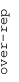
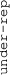

These results are also available as PDF and EPS documents.
Depending on your display resolution, scrolling or zooming may be necessary.
|  |
| 3 |
| 0 |
| -3 |
|  |
| GO:0007156 homophilic cell adhesion via plasma membrane adhesion molecules | |||||||||||
| GO:0030018 Z disc | |||||||||||
| GO:0070125 mitochondrial translational elongation | |||||||||||
| GO:0006869 lipid transport | |||||||||||
| GO:0070207 protein homotrimerization | |||||||||||
| GO:0071805 potassium ion transmembrane transport | |||||||||||
| GO:0030515 snoRNA binding | |||||||||||
| GO:0003333 amino acid transmembrane transport | |||||||||||
| GO:0009982 pseudouridine synthase activity | |||||||||||
| GO:0035987 endodermal cell differentiation | |||||||||||
| GO:0003341 cilium movement | |||||||||||
| GO:0015266 protein channel activity | |||||||||||
| GO:0045746 negative regulation of Notch signaling pathway | |||||||||||
| GO:0070098 chemokine-mediated signaling pathway | |||||||||||
| GO:0005832 chaperonin-containing T-complex | |||||||||||
| GO:0033588 Elongator holoenzyme complex | |||||||||||
| GO:0007218 neuropeptide signaling pathway | |||||||||||
| GO:0006914 autophagy | |||||||||||
| GO:0005814 centriole | |||||||||||
| GO:0046777 protein autophosphorylation | |||||||||||
| GO:0030659 cytoplasmic vesicle membrane | |||||||||||
| GO:0051087 chaperone binding | |||||||||||
| GO:0006470 protein dephosphorylation | |||||||||||
| GO:0051213 dioxygenase activity | |||||||||||
| GO:0001822 kidney development | |||||||||||
| GO:0001843 neural tube closure | |||||||||||
| GO:0043647 inositol phosphate metabolic process | |||||||||||
| GO:0032502 developmental process | |||||||||||
| GO:0006895 Golgi to endosome transport | |||||||||||
| GO:0072546 ER membrane protein complex | |||||||||||
| GO:0019104 DNA N-glycosylase activity | |||||||||||
| GO:0000796 condensin complex | |||||||||||
| GO:1903231 mRNA binding involved in posttranscriptional gene silencing | |||||||||||
| GO:0002377 immunoglobulin production | |||||||||||
| GO:0042571 immunoglobulin complex, circulating | |||||||||||
| GO:0005549 odorant binding | |||||||||||
| GO:0045095 keratin filament | |||||||||||
| GO:0050907 detection of chemical stimulus involved in sensory perception | |||||||||||
| GO:0006413 translational initiation | |||||||||||
| GO:0005681 spliceosomal complex | |||||||||||
| GO:0000932 P-body | |||||||||||
| GO:0000151 ubiquitin ligase complex | |||||||||||
| GO:0042795 snRNA transcription from RNA polymerase II promoter | |||||||||||
| GO:0006378 mRNA polyadenylation | |||||||||||
| GO:0006893 Golgi to plasma membrane transport | |||||||||||
| GO:0080008 Cul4-RING E3 ubiquitin ligase complex | |||||||||||
| GO:0009165 nucleotide biosynthetic process | |||||||||||
| GO:0006607 NLS-bearing protein import into nucleus | |||||||||||
| GO:0000176 nuclear exosome (RNase complex) | |||||||||||
| GO:0016926 protein desumoylation | |||||||||||
| GO:0006360 transcription from RNA polymerase I promoter | |||||||||||
| GO:0097361 CIA complex | |||||||||||
| GO:0006260 DNA replication | |||||||||||
| GO:0000776 kinetochore | |||||||||||
| GO:0004843 thiol-dependent ubiquitin-specific protease activity | |||||||||||
| GO:0006338 chromatin remodeling | |||||||||||
| GO:1904813 ficolin-1-rich granule lumen | |||||||||||
| GO:0048208 COPII vesicle coating | |||||||||||
| GO:0008168 methyltransferase activity | |||||||||||
| GO:0008022 protein C-terminus binding | |||||||||||
| GO:0045454 cell redox homeostasis | |||||||||||
| GO:0006486 protein glycosylation | |||||||||||
| GO:0005085 guanyl-nucleotide exchange factor activity | |||||||||||
| GO:0016874 ligase activity | |||||||||||
| GO:0031966 mitochondrial membrane | |||||||||||
| GO:1990830 cellular response to leukemia inhibitory factor | |||||||||||
| GO:0000786 nucleosome | |||||||||||
| GO:0006805 xenobiotic metabolic process | |||||||||||
| GO:0051287 NAD binding | |||||||||||
| GO:0006561 proline biosynthetic process | |||||||||||
| GO:0019001 guanyl nucleotide binding | |||||||||||
| GO:0009968 negative regulation of signal transduction | |||||||||||
| GO:0030667 secretory granule membrane | |||||||||||
| GO:0031032 actomyosin structure organization | |||||||||||
| GO:0030206 chondroitin sulfate biosynthetic process | |||||||||||
| GO:0031092 platelet alpha granule membrane | |||||||||||
| GO:0031629 synaptic vesicle fusion to presynaptic active zone membrane | |||||||||||
| GO:0032729 positive regulation of interferon-gamma production | |||||||||||
| GO:0019432 triglyceride biosynthetic process |